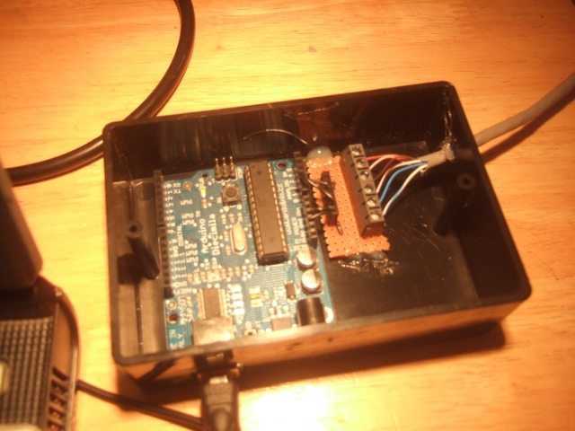

Arduino
The next stage is to convert the analog output signals from the optoisolators to digital information. We can then process this digital information into a useful form before we send it to the computer for graphing an storage. This task is done by a great piece of hardware called an Arduino:

The voltage outputs of the HCPL-7520 optoisolators are connected to two Arduino analog inputs. The Arduino turns the analog input signals into digital information with an onboard Analog to Digital converter.
The Arduino ADC has a resolution of 10bits this along with the sample rate determines the detail of the digital representation of the input anaolog signal. If we take our 0-5V range, 10 bits means we can divide that range in to 2^10 or 1024 divisions. The ADC therfore has a 5V / 1024 = 4.8mV sensitivity (It can detect changes in the input voltage of 4.8mV).
To illustrate why this is important to us lets take the maximum power value that we could measure with our 0.025Ohm current sensing resistor above = 3482Watts. 3482Watts corresponds to a 5V input signal and 0W a 0V input signal. Therefore the accuracy that we can know our power is given by:
This means that the larger range we design our system to measure power over the less acurate our power measurements will be which is worth taking into consideration depending on your application.
The other consideration that determines how accurate your digital representation of the input analog signal is the sampling rate. This is how many measurements we make of the analog input per second the analog signal changes a great deal, many times a second. Therefore to faithfully reproduce the analog waveform digitally many readings have to be taken. For more information on this see the Aruino firmware code description for the power logger and the voltage current waveform sampler, links below.
The amount of memory that the Ardunio has onboard also has implications for the amount of processing that can be done on the current and voltage digital information. As does the data transfer rate from the Ardunio to the computer.